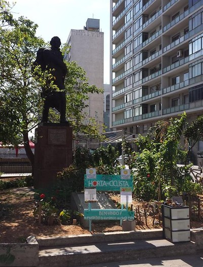

No coração da capital paulista, a horta do Centro Cultural São Paulo é aberta para o público e a pequena produção, destinada aos voluntários
que se revezem para cuidar da horta.
Em 2011, quando foi idealizada, a horta era mantida a partir de mudas e materiais cedidos pela Secretaria Municipal do Verde e do Meio
Ambiente. Atualmente, a área é mantida por voluntários. Mutirões são realizados quinzenalmente, a partir das 10h30min e todos os interessados
podem participar, basta levar mudas (exceto de árvores) e ferramentas para o manuseio do cultivo.
Na zona oeste da cidade, no meio de uma praça pública (Praça das Corujas), a Horta das Corujas, uma das mais conhecidas em
São Paulo, é um espaço de convívio social e de educação ambiental, onde os voluntários aprendem e ensinam a cultivar.
No bairro Vila Beatriz, a horta é cultivada por voluntários que se organizam desde 2012 por um grupo no Facebook, trocando informações
sobre o que está sendo realizado, o que precisa ser feito e dicas para melhorar o trabalho.
|  |
|
No bairro da Saúde, um dos mais tradicionais de São Paulo, a horta que leva o nome do bairro realiza mutirões no segundo
domingo de cada mês às 9 horas.
No Facebook, um grupo foi criado para acompanhar o desenvolvimento da produção, os participantes debaterem temas como agricultura orgânica
e agricultura urbana e organizar o cuidado diário com a plantação.
A horta fica na Rua Paracatu, 66, próximo à estação Saúde do Metrô.